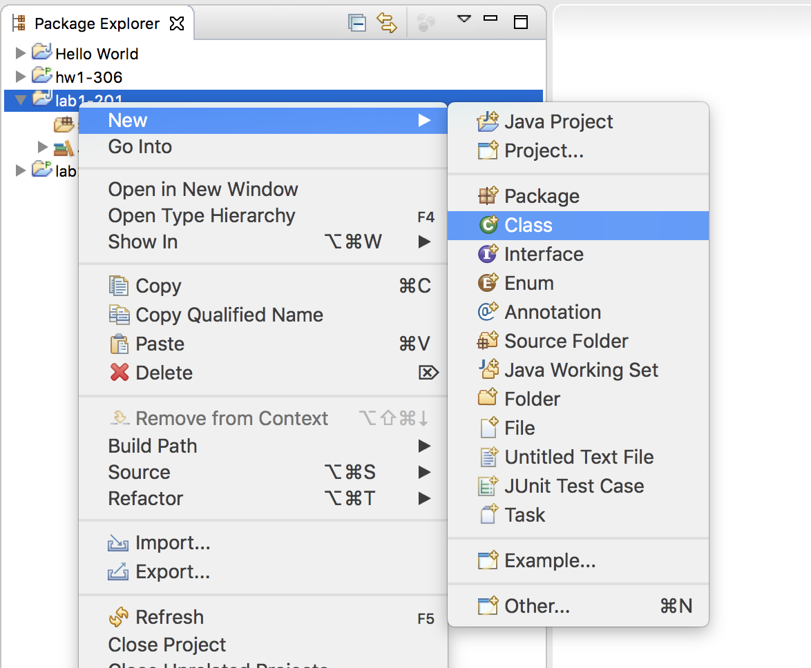
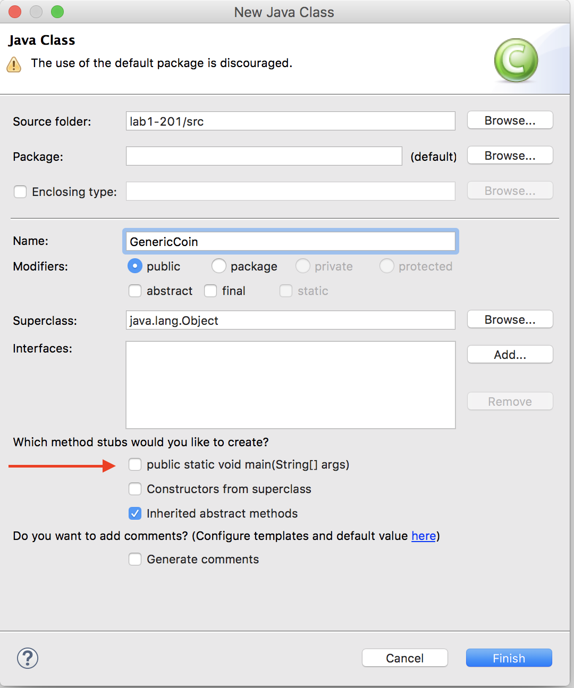

|
How Labs are Managed and Graded
1. Select a partner on your own. The rules are you must pair with a new partner each week. 2. Work as a pair to complete the lab. At the end of the lab period, make sure to share all files with each partner. 3. Each partner will submit the lab separately. (Submission instructions are described later in this lab.) 4. If you do not finish the lab during the lab period, you may either get together outside of class to complete it, or complete it on your own. If you choose to complete it on your own, be sure to indicate this in your submission. |


public enum CoinSide {HEADS, TAILS}; // CoinSide is a new data type
CoinSide side; // side is of type CoinSide
. . .
side = CoinSide.HEADS; // sets side to heads
. . .
if (side == CoinSide.TAILS)
{
// some logic is side is set to tails
}